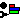

Show Planet Bar Graphs attaches a set of lines to each planet on the map about which you have data. Graph lines indicate size, population, industry and stockpiles at the planet. Note that population, industry and stockpiles will only be displayed if you have current intelligence on the planet. Size will be displayed if you have seen the planet at any time during the game.
Showing Planet Bar Graphs automatically turns off  Group Bar Graphs.